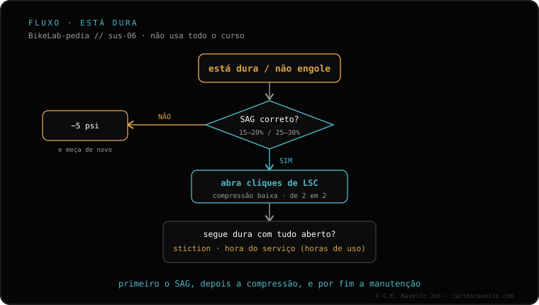

Se o garfo não copia os pequenos impactos e fica duro, o mais comum é excesso de pressão de ar. Verifique nesta ordem: 1) confira o SAG (15-20% no garfo); 2) se o SAG estiver baixo, baixe a pressão de 5 em 5 psi até copiar os pequenos impactos sem perder sustentação; 3) abra cliques de compressão baixa (LSC). Se continuar duro com o SAG correto, suspeite de atrito estático ou tokens demais. Se, ao contrário, ele bate no fim de curso em impactos grandes, isso é o oposto e se trata de outra forma.
Antes de mexer em qualquer coisa por dentro, quase sempre é pressão. Comece pelo SAG: é a medida que diz se você está com excesso.
A ordem, do mais simples à revisão
1 · Confira o SAG — Com seu equipamento de pedal, meça o afundamento em repouso: no garfo, busque 15-20% do curso. Se o SAG estiver muito baixo, você está com excesso de pressão, e por isso ele não copia os pequenos impactos.
2 · Baixe a pressão de 5 em 5 psi — Se o SAG sair baixo (pouco afundamento), tire 5 psi, teste e repita até o garfo copiar os pequenos impactos sem perder sustentação nem afundar demais. Vá em passos curtos, não de uma vez.
3 · Abra a compressão baixa (LSC) — Se estiver fechada demais, endurece o tato nos pequenos impactos. Abra alguns cliques e teste no mesmo trecho de sempre. A quantidade final é decisão sua, conforme o terreno e o gosto.
4 · Se continuar duro com o SAG correto — Suspeite de atrito estático: retentores secos ou muitas horas desde a revisão aumentam o atrito inicial. Verifique também se há tokens demais, que endurecem o fim do curso e tiram a progressividade. Aqui é revisão de retentores ou ajuste no número de tokens.

O fluxo: do SAG e da pressão à compressão, e só no fim ao atrito ou aos tokens.
Erro comum: abrir toda a compressão ou tirar tokens sem antes conferir o SAG. Se você está com excesso de pressão, nenhum ajuste de cliques vai disfarçar: o garfo continuará sem copiar os pequenos impactos.
Continua duro com o SAG correto?
Conte o modelo do garfo, seu peso e a pressão que você usa, e orientamos o que verificar antes de abrir qualquer coisa. Fale conosco no WhatsApp
Perguntas frequentes
Por que fica tão duro nos pequenos impactos?
Quase sempre excesso de pressão: o garfo não copia o terreno. Confira o SAG (15-20%) e, se estiver baixo, baixe a pressão de 5 em 5 psi.
O que verifico depois da pressão?
Abra cliques de compressão baixa (LSC) em passos e teste. Quanto abrir é decisão sua, conforme o terreno.
E se continuar duro com o SAG correto?
Suspeite de atrito estático (retentores secos / horas desde a revisão) ou tokens demais. É revisão de retentores ou ajuste de tokens.